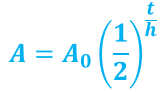
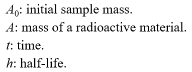
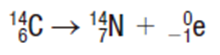

Callout
There is no way to predict exactly when a particular unstable nucleus will disintegrate. However, it is possible to predict the decay rate for a large sample of an isotope.
Radioactive materials decay at different rates, which can vary significantly. The average length of time it takes a radioactive material to decay to half its original mass is called the half-life.
The average length of time it takes radioactive material to decay to half of its original mass
Callout


Neon-19 has a half-life of 17.22 s. What mass of neon-19 will remain from a 100 mg initial sample after 30 s?
A 100 mg sample of magnesium-27 decays by 7 % of its previous mass every minute. Determine its half-life and state the half-life decay equation.
Callout
The half-life of carbon-14 is 5730 years. It decays into nitrogen-14 according to the following nuclear reaction equation:
